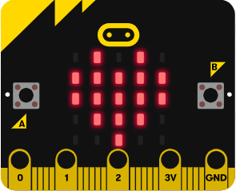

Les LED
L'objet display

La matrice LED comporte 25 LED. On peut l'utiliser pour afficher des caractères, des images, faire défiler un message, etc.
Info
L'écran est un objet nommé display. On applique à cet objet des méthodes selon la syntaxe :
display.methode(parametres)
où methode est à choisir dans la liste suivante :
- clear
- show
- scroll
- on
- off
- is_on
- set_pixel
- get_pixel
La complétion automatique de l'éditeur mu permet d'accéder à cette liste dès que l'on saisit display.

Afficher des caractères, des messages

| Instructions | Effet |
|---|---|
display.show(0) |
Affiche 0 sur la matrice LED |
display.show('A') |
Affiche A sur la matrice LED |
display.show('ABCDE') |
Affiche un par un les caractères A, B, C, D et E sur la matrice LED |
Faire défiler des messages

| Instructions | Effet |
|---|---|
display.scroll('ABCDE') |
Fait défiler de droite à gauche les caractères A, B, C, D et E sur la matrice LED |
display.scroll('ABCDE', delay=250, loop=False) |
Fait défiler de droite à gauche les caractères A, B, C, D et E sur la matrice LED |
Allumer des pixels
Info
- Chaque pixel a des coordonnées entières de (0, 0) dans le coin supérieur gauche à (4, 4) dans le coin inférieur droit.
- La luminosité de chaque pixel peut être définie, de 0 (le pixel est alors désactivé) à 9 (niveau le plus lumineux).
| Instructions | Effet |
|---|---|
display.set_pixel(x, y, lum) |
Allume le pixel aux coordonnées (x, y) avec un niveau de luminosité lum (entier entre 0 et 9) |
display.get_pixel(x, y) |
Renvoie le niveau de luminosité du pixel de coordonnées (x, y) |
Afficher des images
Afficher des images pré-définies

Info
Il existe des images prédéfinies que l'on peut afficher en utilisant leur nom et la syntaxe Image.nom
Voici la liste des images prédéfinies, par ordre alphabétique :
ANGRY - ASLEEP - BUTTERFLY - CHESSBOARD - CONFUSED - COW - DIAMOND - DIAMOND_SMALL - DUCK - FABULOUS - GHOST - GIRAFFE - HAPPY - HEART - HEART_SMALL - HOUSE - MEH - MUSIC_CROTCHET - MUSIC_QUAVER - MUSIC_QUAVERS - NO - PACMAN - PITCHFORK - RABBIT - ROLLERSKATE - SAD - SILLY - SKULL - SMILE - SNAKE - SQUARE - SQUARE_SMALL - STICKFIGURE - SURPRISED - SWORD - TARGET - TORTOISE - TRIANGLE - TRIANGLE_LEFT - TSHIRT - UMBRELLA - XMAS - YES
Il existe également deux séries d'images :
- les flèches : ARROW_N, ARROW_NE, ARROW_E, ARROW_SE, ARROW_S, ARROW_SW, ARROW_W, ARROW_NW
- les heures : CLOCK12, CLOCK11, CLOCK10, CLOCK9, CLOCK8, CLOCK7, CLOCK6, CLOCK5, CLOCK4, CLOCK3, CLOCK2, CLOCK1
Définir ses propres images

Info
On peut définir une image en affectant à chaque pixel son niveau de luminosité, soit ligne par ligne:
eclat = Image("00300:"
"03630:"
"36963:"
"03630:"
"00300")
eclat = Image("00300:03630:36963:03630:00300")
| Instructions | Effet |
|---|---|
display.show(Image.HEART) |
Affiche un cœur sur la matrice LED |
display.show(mon_image) |
Affiche l'image définie par la variable mon_image |
Pour aller plus loin
La classe Image contient des méthodes pour créer et manipuler des images.
Par exemple,
mon_image = Image()
mon_image.fill(7)
Afficher des pixels aléatoires

Info
Le module random contient la fonction randint(min, max) qui renvoie un entier entre min et max compris. On peut l'utiliser pour définir aléatoirement la position d'un pixel ou la luminosité d'un pixel.
from microbit import *
from random import randint
for i in range(5): # numéro de colonne de 0 à 4
for j in range(5): # numéro de ligne de 0 à 4
display.set_pixel(i, j, randint(0, 9))
Animer des images

Info
Pour créer une animation affichant successivement plusieurs images, créer une liste contenant toutes les images, puis afficher cette liste.
mes_images = [Image.HEART, Image.HEART_SMALL]
display.show(mes_images, delay=400, loop=True)
| Instructions | Effet |
|---|---|
display.show(mes_images, delay=400, loop=True) |
Affiche en boucle les images de la liste mes_images, chacune étant affichée pendant 400 ms avant d'être remplacée par la suivante |
display.show(mes_images, delay=400, loop=False) |
Affiche une fois chaque image de la liste mes_images, chacune étant affichée pendant 400 ms avant d'être remplacée par la suivante |
Effacer l'écran
| Instructions | Effet |
|---|---|
display.clear() |
Éteint toutes les LED en leur affectant une luminosité à 0 |
Allumer / éteindre l'écran
| Instructions | Effet |
|---|---|
display.on() |
Allume chaque LED avec sa propre valeur de luminosité |
display.off() |
Éteint chaque LED mais n'efface pas sa propre valeur de luminosité |
display.is_on() |
Renvoie True si display.on() est activé, Falsesinon. |
Détecter le niveau de lumière ambiante
Info
Les LED de l’écran peuvent détecter la quantité de lumière arrivant sur l’écran.
| Instructions | Effet |
|---|---|
display.read_light_level() |
Renvoie un entier compris entre 0 et 255 représentant le niveau de lumière |
Références
Le module Display : documentation microbit-micropython
La classe Image